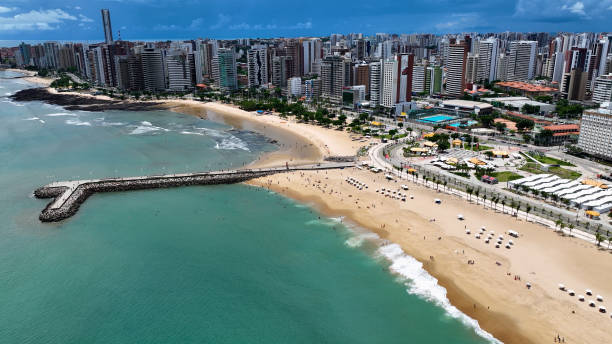

O Ceará é um estado localizado na região Nordeste do Brasil, conhecido por suas belas praias, como Jericoacoara e Canoa Quebrada, além de sua cultura rica, com destaque para o forró, o artesanato e a culinária típica. A economia do Ceará é baseada na agricultura, na indústria e no turismo, que atrai muitos visitantes todos os anos. Atualmente, o governador do Ceará é Elmano de Freitas, que trabalha para promover o desenvolvimento econômico, social e a qualidade de vida dos cearenses.
